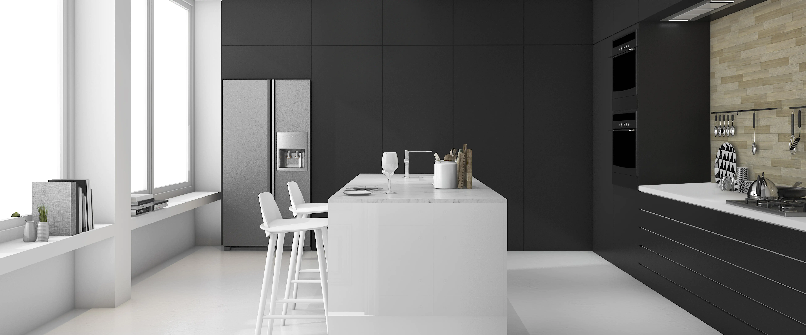
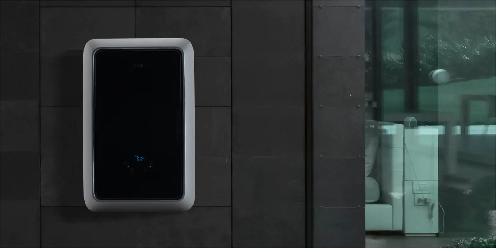

AIRFEL MAESTRO SMART PREMIX - ОТОПИТЕЛЬНЫЙ КОТЕЛ
Airfel всегда рядом с тобой, с новым отопительным котлом Maestro Smart Premix,
изысканностью, практичностью, безопасностью,
экономией и эффективностью. Подготовься к знакомству с абсолютно новым отопительным котлом.
Элегантная черная стеклянная панель
Компактный дизайн нового поколения
Экономная производительность благодаря запатентованному теплообменнику
Встроенное управление и автоматический онлайновый контроллер
Airfel Maestro Smart Premix превосходит все, что мы ожидаем от отопительного котла благодаря привлекательной, элегантной стеклянной передней панели черного цвета и футуристическому дизайну... Комбинированный котел нового поколения, который открывает новые горизонты благодаря онлайн-управлению, п
реподносит вам особый комфорт благодаря цифровому термостату. И наконец, самое главное, все эти преимущества представлены в одном котле.
